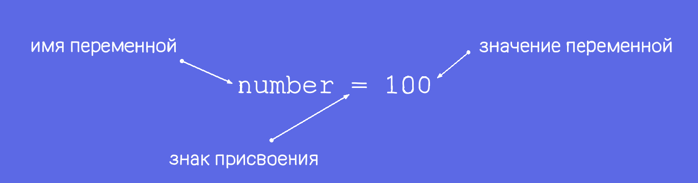

Понятие python
Python - это язык программирования. Как любой язык программирования он устроен как некая последовательность команд, которые выполняются и приводят к какому-то результату.
Основные виды ошибок
Синтаксические — допущены ошибки в написании кода.
Логические — программа работает, но результат неправильный.
Время выполнения — программа зацикливается или работает очень медленно.
Основные команды
Переменные и типы данных
Что такое переменная?
Переменная – участок памяти в компьютере, который что-то хранит. Чтобы создать переменную, нужно придумать имя, а затем присвоить значение этому имени:
Операция присвоения - это механизм связывания переменной со значением.
Строковый тип данных (str)
Строковые значения или строки – это буквы, слова и предложения. Их нужно указывать только в кавычках (можно и в двойных “”, и в одинарных ‘ ’).
Целочисленный тип данных (int)
Целые числа – это такие числа как 0, 1, 2, 3, 4… и противоположные им -1, -2, -3, -4… – то есть, это все натуральные числа (которыми можно что-то посчитать), противоположные им и ноль.
Вещественный тип данных (float)
Вещественные (или дробные) числа – числа, у которых есть дробная часть. Они что-то уточняют, например, вес или температуру.
Логический тип данных (bool)
Логические значения – два значения, которые являются противоположностями друг другу – истина или ложь, да или нет, включено или выключено и называются они True и False.
Функции
Функции – специальные слова, которые что-то выполняют.
Функция Print
Функция print, например, выводит на экран любые данные, даже те данные, которые хранит переменная.
Функция Input
Эта функция запрашивает данные у пользователя
ВажноФункция input принимает данные и сразу же удаляет эти данные из памяти программы. Чтобы этого избежать, занеси данные в переменную.
Аргументы функции
Аргументы - специальные слова, которые уточняют, как должна работать функция. У большинства функций есть аргументы.
Аргумент sep
Аргумент, который уточняет, какой знак будет выведен между значениями.
Аргумент end
Аргумент, который уточняет, какой знак будет выведен в конце выполнения всей функции print.
Форматирование строк
Математика в Python
Сложение, вычитание и умножение
С целыми числами можно выполнять арифметические операции: сложение (+), вычитание (-), умножение (*), вычисление неполного частного (//), вычисление остатка (%), возведение в степень (**).
Основные функции с числами
Функция round
Round-функция округления. Если в скобках функции round написать выражение или просто дробное число, округление произойдёт до целого числа. А если через запятую указать дополнительное число, то округление произойдёт до нескольких знаков после точки. Например:
>>>round(8/3)
3
>>>round(8/3,2)
2.67
Функция abs
Abc-Абсолютное значение т.е значение числа без учёта его знака. Совершенно неважно, каким раньше было число – положительным, отрицательным или нулём – функция abs отбросит знак:
Это работает как с отрицательными целыми числами:
>>abs(-5)
5
так и с отрицательными дробными числами:
>>>abs(-1.2)
1.2
Простые и вложенные условия
Операции сравнения
С помощью операций сравнения == (равно), != (не равно), >(больше), < (меньше), >= (больше или равно), <= (меньше или равно) можно записать условие. Знаки > и < всегда стоят перед =.
Простые условия
В языках программирования есть код, который должен выполняться, только если какое-то условие истинно. Такой код так и называется - условием. Каждое условие начинается со слова if.
if 5>3:
__print('True')
Вложенные условия
Вложенные условия похожи на простые, это условие состоит из обычного, но одно внутри другого
if 10>=5:
__if 10 <=10:
____print('True')
Операторы условий
В Python условия позволяют выполнять определённый блок кода, только если выполнено какое-то условие. Для этого используется оператор if, а также elif и else для дополнительных проверок.
Простая проверка if
x = 10
if x > 5:
__print("x больше 5")
Проверка с elif и else
elif — проверка альтернативных условий
else — блок, который выполняется, если ни одно из условий не выполнено
x = 3
if x > 5:
__print("x больше 5")
elif x == 5:
__print("x равно 5")
else:
__print("x меньше 5")
Другие логические операторы
Условия могут содержать логические операторы:
and — логическое И
or — логическое ИЛИ
not — отрицание
a = 7
b = 10
if a > 5 and b > 5:
__print("Оба больше 5")
Циклы
Цикл for
Используется для повторения по последовательностям (списки, строки, диапазоны и т.д.).
По числам:
for i in range(5):
__print(i)
По списку:
fruits = ["яблоко", "банан", "груша"]
for fruit in fruits:
__print(fruit)
По строке:
for letter in "Python":
__print(letter)
Цикл while
Повторяет блок кода, пока условие истинно.